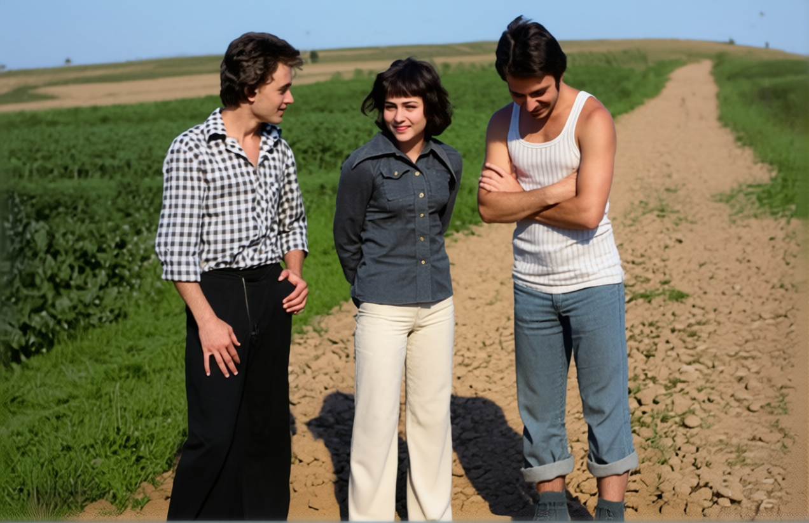

Archival Reference
Begin with the original black-and-white photograph as the visual foundation.

GENERATIVE AI · PHOTO RESTORATION · QWEN
From Past to Present
One archival photograph. Four visual chapters. A journey from monochrome memories to a contemporary interpretation — powered by generative AI.
EXPLORE THE TRANSFORMATIONOld photographs hold moments that deserve to be seen again. Timeless Memories explores how generative AI can add colour to a historical image and reinterpret its atmosphere for a contemporary visual aesthetic.
The starting point is a black-and-white photograph of three people on a rural path. Using Qwen in ComfyUI, I developed a sequence of colour and modernised variations while retaining the original scene as the creative reference.
AI-generated colours and modern details are artistic interpretations, not verified historical facts.
Drag the handle to reveal the contemporary reinterpretation.
The composition is based on the archival reference. Generated versions may alter fine details.
Explore the original photograph and three AI-generated results.
The authentic starting point: an aged monochrome print with the character and texture of an archival photograph.
AI-assisted colourization gives the scene a new sense of warmth while preserving its historical visual character.
A refined contemporary look, with enhanced clarity, naturalistic lighting and reinterpreted textures.
An alternative final interpretation: a vintage moment presented with the visual polish of a modern photograph.
A reference-driven workflow built around Qwen and ComfyUI.
Begin with the original black-and-white photograph as the visual foundation.
Use Qwen in ComfyUI to explore plausible colours and preserve the recognisable scene.
Generate contemporary interpretations with updated rendering, lighting and detail.
Compare variants side by side and select the images that best tell the story.
THE PAST, REIMAGINED